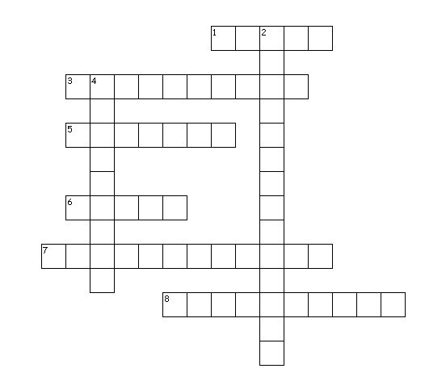
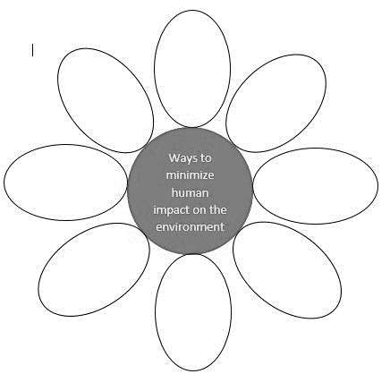

Directions: Write True if the statement is true and False if the statement is false.
Write your answers on a separate sheet of paper.
Directions: Match the problem with the solution by writing the letter only on a separate sheet of paper.
| Human Activities | Pollutant derived from human activities | Effect of pollutant on the Environment |
|---|---|---|
| 1. | Nitrates | Alter the nutrient of the soil |
| 2. | Pesticides and herbicides | Pollute bodies of water |
| Burning of plastics | Carbon dioxide | 3. |
| 4. | Toxic chemicals | Fish kill |
| Using smoke-belching vehicles | Smog | 5. |
Directions: Complete the crossword puzzle. Write your answers on a separate sheet of paper.
Across
1. Observe proper disposal of ________ that can destroy biodiversity.
3. The popularly known ________ gases are carbon dioxide, methane, and nitrous oxide.
5. Constant and uncontrolled use of chemical fertilizers may increase soil ________.
6. The buildup of fertilizers may cause algal ________ leading to the death of bodies of water.
7.________ gives rise to resistant pests and diseases that account for chemical treatment.
8.________ a chemical used to destroy plants or stop plant growth.
Down
2. Ecological ________________ includes the stability of climate systems, biodiversity, and everything that is connected with the Earth’s ecosystem.
4. Three ways to conserve resources include reducing, ________, and reusing.
Directions: List/suggest conservation practices that minimize the negative impacts of human activities on the environment. Write your answers on a separate sheet of paper.
Directions: Answer the question below. Write your answers on a separate sheet of paper.
Suppose you were a farmer, what kind of fertilizer will you use to ensure higher crop yield without damaging
the environment? Explain your answer.
______________________________________________________________
______________________________________________________________
______________________________________________________________